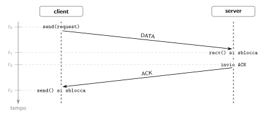

BigPicture
Introduzione
I tre argomenti principali di quest'anno:
- Thread.
- Socket.
- Protocollo HTTP.
Sono strumenti indispensabili per il funzionamento di qualsiasi servizio.
Servizio
Con servizio si intende che un operatore connesso alla rete, detto server, ascolta richieste da operatori, detti client, i quali vogliono usufruire del servizio predisposto dal server.
La comunicazione tra ciascun client ed il server è univoca, ovvero il server ha tante connessioni aperte contemporaneamente quanti sono i client di cui vuole soddisfare la richiesta.
Ciclo di comunicazione HTTP
Ricapitoliamo un ciclo di comunicazione HTTP.
Tutto inizia dal client, il quale richiede al server di effettuare un'operazione sulla risorsa indicata dall'URL.
Lato client
- (
c1) Il client genera la richiesta HTTP. - (
c2) Il client si connette al server tramite protocollo TCP. - (
c3) Il client invia la richiesta e attende la risposta. - (
c4) Il client riceve la risposta dal server. - (
c5) Il client elabora la risposta.
Lato server
- (
s1) Il server è già in ascolto di eventuali connessioni in ingresso. - (
s2) Il server riceve la connessione del punto (c2) e la accetta. - (
s3) Il server riceve la richiesta inviata in (c3). - (
s4) Il server effettua i controlli su di essa (validazione, esistenza, autorizzazione). - (
s5) Il server elabora la richiesta producendo una risposta. - (
s6) Il server invia la risposta al client il quale la riceve in (c4).
Il problema della concorrenza
Poniamoci questa condizione:
Il server è single-core.
Questo significa che la CPU non può effettuare due o più operazioni contemporaneamente.
Il rapporto client-server è un rapporto molti a uno: più client vogliono soddisfare la propria richiesta al server. Il server però rimane sempre uno soltanto.
Può un server single-core soddisfare più richieste contemporaneamente?
Esempio: due client, un server
La situazione è la seguente: ci sono due client, client-1 e client-2, che vogliono effettuare una richiesta al server server-1.
Connessione (accept/connect)
Il server server-1 è in ascolto:
# server
sp = socket(AF_INET, SOCK_STREAM)
sp.bind((IP_SERVER, 443))
sp.listen()
sa = sp.accept() # bloccata
In quest'ultima operazione il server si blocca attendendo una connessione in ingresso.
Il client client-1 esegue la funzione connect la quale blocca tutto fin a quando il server non accetta la connessione:
La funzione accept si sblocca e ritorna un socket attivo sa connesso a client-1.
Lato client, lo sblocco della funzione accept equivale allo sblocco della funzione connect in client-1:
Quindi ora il socket sa nel server può scambiare pacchetti TCP con il socket sock_client nel client.
Scambio dati (send/recv)
Successivamente allo sblocco della accept nel server e della connect nel client-1 entrambi si ri-bloccano in:
Quando il server riceve i dati inviati dalla send si sblocca. Lo sblocco del client invece avviene quando il client riceve l'ACK inviato dal server.

Elaborazione della richiesta
Ora il server effettua le operazioni sulla richiesta, mentre client-1 non fa nulla, aspetta la risposta.